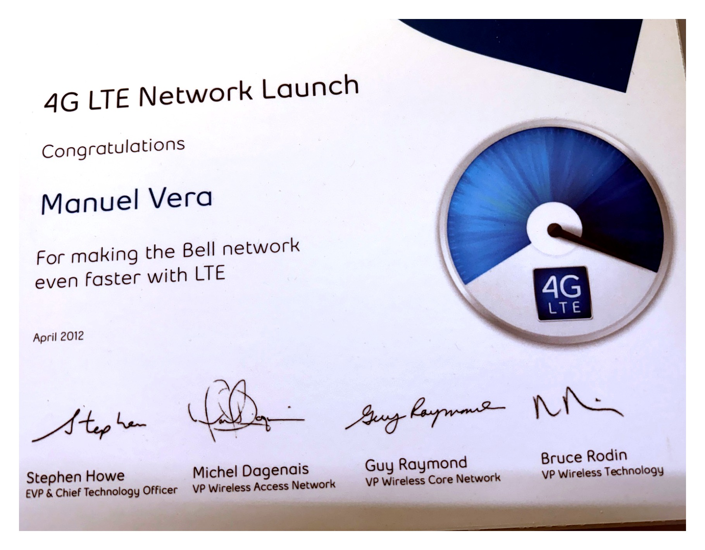

4G LTE Network Launch
Leading market acceptance and optimization as Bell moved from its initial Greater Toronto Area LTE launch to a rapid multi-market rollout across Canada.
Launch fast without compromising network quality
The transition to LTE was a major competitive technology shift in Canadian wireless. Bell needed an aggressive rollout plan that could move quickly from the initial GTA deployment into major markets across the country.
Speed mattered, but every market still had to meet clearly defined network-performance and quality standards before commercial launch. At the same time, the existing 3G/HSPA+ network had to continue delivering a strong customer experience.
Network acceptance and optimization leadership
I led the engineering team responsible for acceptance and optimization before the commercial launch of each individual market.
I defined the engineering acceptance criteria, performance targets and launch-readiness standards used to determine whether a market was ready to go live, while coordinating with regional engineering and deployment teams to resolve issues before launch.
Central management. Distributed focus.
A common national framework gave every region the same definition of launch readiness, while regional ownership allowed multiple markets to progress in parallel.
This model maximized the use of available engineering resources and avoided turning the central team into a deployment bottleneck. Regional teams retained the flexibility to work directly with local deployment organizations while remaining aligned to national standards.
Protecting the existing customer experience
The LTE rollout could not come at the expense of customers already using Bell's network. While accelerating LTE acceptance and optimization, the team continued monitoring and protecting the performance of the existing 3G/HSPA+ network.
From the GTA to rapid multi-market expansion
Bell launched LTE in the Greater Toronto Area and then rapidly expanded the technology into major Canadian markets.
The engineering model demonstrated that centralized governance combined with distributed regional execution could support an aggressive technology rollout while maintaining consistent acceptance and performance standards.
Project Recognition
4G LTE Network Launch · April 2012
Recognition presented to Manuel Vera for his contribution to making the Bell network faster with LTE.
This recognition is a personal project artifact from the LTE rollout and reflects my contribution to the engineering effort supporting Bell's 4G LTE launch.

Scale comes from clear standards and empowered teams
A national technology rollout does not scale by centralizing every decision. It scales by making expectations measurable and consistent, then giving capable regional teams the ownership to execute.